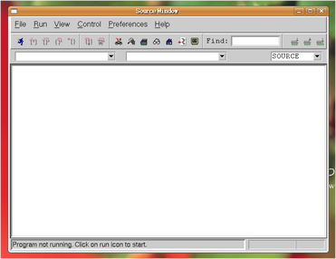
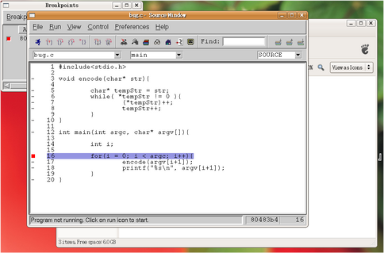
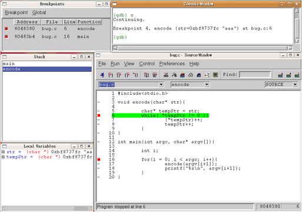

文件目錄
本次實驗的目的是學會如何對程式進行除錯，無論程式是被編譯成在 target 還是 host 端執行。底下將分段介紹如何用 GDB 以及它的一套 GUI 程式來進行除錯。
GDB 是一套在 Unix-like 環境上執行的文字介面 debugger，能夠支援多種平台以及程式語言。和GDB相關的介紹請參考 wikipedia [1] 以及 GDB 官方網站 [2] 。
| [1] | http://en.wikipedia.org/wiki/Gdb |
| [2] | http://www.gnu.org/software/gdb/ |
Insight 是使用 GDB 的一套 GUI，關於 Insight 的介紹可以參考 Insight 官方網站 [3] 。
| [3] | http://sourceware.org/insight/ |
如果有依照之前的實驗進行，gdb應該已經安裝在電腦當中，我們可以用 whereis 指令來確認 gdb 是否存在。
whereis gdb
若是gdb沒有安裝在電腦當中，可以使用 apt-get 來安裝gdb
sudo apt-get install gdb
GDB將程式分成一個個的區塊（ frame ），每個 frame 都對應到程式的一個 subroutine ，在使用 GDB 執行程式時是依照 frame 來分塊的。目前執行的 subroutine 叫做 frame 0 ，呼叫該 routine 的叫做 frame 1 ，以此類推。當 frame 0 要呼叫下一個 subroutine 時， GDB 會將目前的資料存到 stack 中，然後才執行下一個 frame ，這樣的分法可以方便除錯時檢視各個 subroutine 之間的關係。
我們用一個簡單的程式來當作使用GDB除錯的範例。以下用C 寫的程式會將輸入的字串全部加 1以達到加密的目的。
#include<stdio.h>
char* encode(char* str){
char* tempStr = str;
while( *tempStr != 0 ){
(*tempStr)++;
tempStr++;
}
}
int main(int argc, char* argv[]){
int i;
for(i = 0; i < argc; i++){
encode(argv[i+1]);
printf("%s\n", argv[i+1]);
}
}
Note
以上程式碼可以在 opencsl 網站 http://opencsl.openfoundry.org 的「實驗相關檔案」下載。
如果要用 GDB 來除錯，必須在編譯時加上 -g 參數，使 gcc 多加一些除錯資訊到程式中。
gcc -g -o encode encode.c
在編譯完成後，就可以將程式用 GDB 來執行。
gdb ./encode
當載入完成後，會出現 GDB 的命令列，此時可以用 set args 設定要丟給程式的參數，並用 show args 來檢查所下的參數。
(gdb) set args abc osss (gdb) show args Argument list to give program being debugged when it is started is "abc osss".
接著就可以用 run 來執行程式。
(gdb) run
在執行之後會看到 GDB 出現提示資訊，跟我們說程式因為 segmentation fault 而終止了，並且會提示導致 segmentation fault 的程式行號。
如果想要在使用 GDB 時檢視程式碼，可以直接在 GDB 裡用 list 指令，或是簡寫 l ，後面可以指定要顯示某一段程式碼，指定的方式可以是行號、函式名稱、檔案名稱或是程式的位址。 例如想要顯示 encode 這個函式到第15行的內容，可以打
(gdb) list encode, 15
如果只給list一個參數，則會顯示那個參數代表的程式碼附近十行的程式。
如果想要繼續往後閱讀程式碼，只要再打一次 list 即可。 另外，「list - 」則可以印出前十行的程式碼。
在程式碼中插入中斷點可以使 GDB 不會一次把程式執行完，而會停在中斷點處。當程式被中斷時，我們可以使用 GDB 來讀取程式內變數、 CPU register 以及程式的其他資訊，本段先介紹如何設置中斷點以及逐步執行程式。
插入中斷點的指令是 breakpoint 或是簡寫 break、b ，後面可以加上參數指定行號、函式或是程式中的位址。當 GDB 執行遇到中斷點時，它會暫停在中斷點之前，也就是說，被設為中斷點的那行程式或函式就是下一個要執行的程式碼。例如我們可以透過以下指令將執行 encode() 前、後都設下中斷點：
(gdb) b encode (gdb) b 10
第十行剛好是 encode 的結尾。
當設定好中斷點之後便可以用 run 開始執行程式，接著會發現 GDB 停在 encode() 的第一行程式碼，並且顯示它的參數。
(gdb) set args abc osss (gdb) run Breakpoint 1, encode (str=0xbfef383c "abc") at bug.c:5 5 char* tempStr = str;
此時，我們有三種方式可以選擇下一步的動作：
continue ，或是簡寫 cont、c
continue 的意思是繼續執行到下一個中斷點或是程式結束為止。
next ，或是簡寫 n
next 是一次執行一行程式碼，當程式碼是呼叫函式時， GDB 只會把它視為一行程式碼。
step ，或是簡寫 s
step 和 next 類似，但當碰到函式呼叫時， GDB 會進入函式中逐行執行。
以下示範三種不同方式的結果：
Breakpoint 1, encode (str=0xbfef383c "abc") at bug.c:5
5 char* tempStr = str;
# 執行下一行程式碼
(gdb) n
6 while( *tempStr != 0 ){
# 直接執行到下一個中斷點
(gdb) c
Continuing.
Breakpoint 2, encode (str=0xbfef383c "bcd") at bug.c:10
10 }
# encode 結束，所以往下一行會跳回 main 裡的 printf
(gdb) n
main (argc=3, argv=0xbfef35a4) at bug.c:18
18 printf("%s\n", argv[i+1]);
(gdb) n
bcd
16 for(i = 0; i < argc; i++){
(gdb) s
17 encode(argv[i+1]);
# 將要執行 encode ，選擇進入 encode 中逐步執行
(gdb) s
Breakpoint 1, encode (str=0xbfef3840 "osss") at bug.c:5
5 char* tempStr = str;
值得注意的一點是，如果被呼叫的函式中有設定中斷點，即使是用 next 逐步執行， GDB 還是會跳到函式中。
當 GDB 停在中斷點，或是在逐步執行的過程中，我們可以透過 print 指令，或是簡寫 p 來讀取程式內變數的值。接續上面的例子，當程式停在第一個中斷點時，因為程式已經進到 encode() 的第一行，所以目前有效的變數只有 encode() 以及它的參數 str ，main()裡的參數因為不屬於此 frame ，所以無法讀取，而 tempStr 因為還未宣告，因此也是無效的，以下是程式停在 encode() 時使用 print 的情況：
(gdb) p str
$6 = 0xbf99683b "abc"
(gdb) p encode
$7 = {void (char *)} 0x8048374 <encode>
# 尚未宣告的變數
(gdb) p tempStr
$8 = 0x1 <Address 0x1 out of bounds>
# 不在此 frame 的變數
(gdb) p argc
No symbol "argc" in current context.
可以發現到 GDB 會幫每次 print 的變數都取一個暫存代號，我們可以直接選擇顯示這些代號的內容，或是用 $ 、 $$ 來分別表示前一個顯示的變數、前二個顯示的變數的值。
另外， print 也可以顯示陣列裡的部份內容，或是顯示不同的進位方式，如：
# 從 str[0] 開始，顯示兩個元素
(gdb) p str[0]@2
$9 = "ab"
# 用16進位方式顯示
(gdb) p/x str[1]@2
$10 = {0x62, 0x63}
如果不想要每次中斷時都重新用 print 來讀取自己想要看的值，可以用 display 設定在每次程式被中斷時想要顯示的資訊。 display 的設定方法和 print 相同，在這裡就不另外作示範。
當我們想要知道目前函式之間的呼叫狀態時，可以使用 backtrace 指令，或是簡稱 bt ，它能顯示目前 frame stack 的狀態，也可以在後面加上參數「 full 」來顯示每個 frame 裡的 local variavle 。
info 則是顯示各種 GDB 內設定、程式執行狀況的指令。目前設定的中斷點、 display ，或是 CPU registers 的內容都可以用這個指令辦到，如：
# 顯示目前設定的中斷點 (gdb) info b # 顯示目前設定的 display (gdb) info display # 顯示 eax 的值 (gdb) info register eax
除了在本機除錯之外，GDB 也可以透過網路對 target 端的程式進行除錯。
若要進行遠端除錯，我們需要編譯在 target 端執行的 gdbserver 以及在 host 端控制 gdbserver 的 gdb ，因為 gdbserver 的程式較原來的 gdb 簡單，因此通常 gdbserver 會比 gdb 本身還要容易 port 到 target 上去，但是在使用上又和原本的 gdb 相同。
下載檔案以及建立資料夾
首先要到 GDB 網站下載 gdb 原始碼：
wget http://ftp.gnu.org/gnu/gdb/gdb-6.8.tar.bz2
接著解開壓縮檔後並進入該目錄：
tar xf gdb-6.8.tar.bz2 cd gdb-6.8
然後在 gdb 的根目錄底下建立供 gdb 以及 gdbserver 使用的目錄：
mkdir gdb-host gdb-target
編譯 host 端的 gdb
我們要先製作 gdb 的 configure 檔，再根據 configure 來編譯 gdb
cd gdb-host ../configure --target=arm-linux-uclibc --prefix=$(pwd)
接著再進行編譯即可產生 host 端使用的 gdb
make make install
在編譯完成後，可以在 gdb-6.8/gdb-host/bin/ 下發現 arm-linux-uclibc-gdb ，就是我們剛才製作出的 gdb。
編譯 target 端的 gdbserver
在編譯完 後，也是用類似的步驟編譯 gdbserver 。首先是產生 configure 檔
cd ../gdb-target CC=arm-linux-uclibc-gcc ../gdb/gdbserver/configure --host=arm-linux-uclibc --prefix=$(pwd)
接著開啟 gdb-target/ 底下的 Makefile ，在大約 99 行的地方找到
CFLAGS = -g -O2
因為 target 端沒有編譯動態函式庫，因此要在它後面加上 -static ，使 gdbserver 不使用動態函式庫
CFLAGS = -g -O2 -static
最後再進行編譯即可。在編譯完成後可以在 gdb-6.8/gdb-target/ 下發現 gdbserver ，就是等一下要在 target 端直營的程式。
我們需要編譯一個能夠在 target 端執行的程式，因此要使用 cross-compiler 以及加上 -static 參數。
以第二章所舉的 bug.c 為例：
arm-linux-uclibc-gcc bug.c -o bug -static -g
要進行遠端除錯的步驟如下：
在 target 端用 gdbserver 開啟要除錯的程式，並監聽某一個 port 等 host 端的 gdb 連進來。
進行此步驟前，請先用 QEMU 載入 linux kernel ，並切換到 gdbserver 和 bug 所在的目錄，就可以鍵入
./gdbserver 192.168.0.1:5566 bug
Note
192.168.0.1 是 host 端的 IP
5566 是 gdbserver 監聽的 port
bug 是要偵錯的程式
從 host 端連到 target 進行 debug
在 host 端也用 gdb 執行同一個程式，在此還需要引入程式的理由是因為 gdbserver 只負責控制程式，但關於程式碼的內容等和程式執行本身的資訊還是由 gdb 自己負責。
首先，先用 gdb 引入 bug
arm-linux-uclibc-gdb bug
接著，連線到 target 端
target remote 192.168.0.2:5566
即可用第二章所教的方法進行 debug 。
Note
192.168.0.2 是 target 端的 IP
5566 是 gdbserver 監聽的 port
在 Ubuntu 中，我們可以直接透過套件管理程式來安裝 insight 。在終端機鍵入以下指令：
sudo apt-get install insight
或是使用 synaptic 套件管理程式安裝。
在安裝完成後，在終端機鍵入
insight
就會出現 Insight 的視窗介面。
在 Insight 視窗中可以看到各個對應 GDB 的指令，如 breakpoint 、 file ，甚至還可以直接跳回 GDB 使用純文字的介面（ ctrl + N ）。以下列出在本實驗中有介紹的 GDB 相關指令在 insight 中對應的快捷鍵：
| GDB 指令 | Insight 快捷鍵 |
|---|---|
| breadpoint | ctrl + b |
| run | r |
| continue | c |
| step | s |
| next | n |
| local variable | ctrl + n |
例如按下 ctrl + b 之後就會可以設定中斷點， Insight 也會新增一個視窗來顯示目前所有中斷點的資訊。
雖然 Insight 可以比較方便地設定一些功能，像是一次顯示所有 registers 、 stack 的狀況，但並無法使用 GDB 所有的功能，例如我們無法用 Insight 來設定 args （ set args ）以及環境變數，因此，比較好的方式是使用 Insight 附的文字介面再加上其他我們想要使用的功能，將視窗切割成很多個不同的區塊，如此一來，我們就可以一邊觀察目前程式執行的位址，一邊觀察所有變數的值，並很容易的設定中斷點，因為視窗介面讓我們可以比較容易找到想觀察的程式碼。
本實驗只對 GDB 作了最基本的介紹，但 GDB 其實還可以在其他的情況下除錯，如同時除錯 multi-thread / multi-process 的程式、對已經在執行的程式除錯等，另外，在除錯的過程中也可以使用更多的指令來提昇效率，如設定遇到中斷點時要執行哪些指令（ commands ）。以下提供一些關於 GDB 的教學網站，供有興趣的人自行參考學習。
本文件以 reStructuredText 格式編撰，並可使用 docutils 工具轉換成 HTML 或 LaTeX 各類格式。